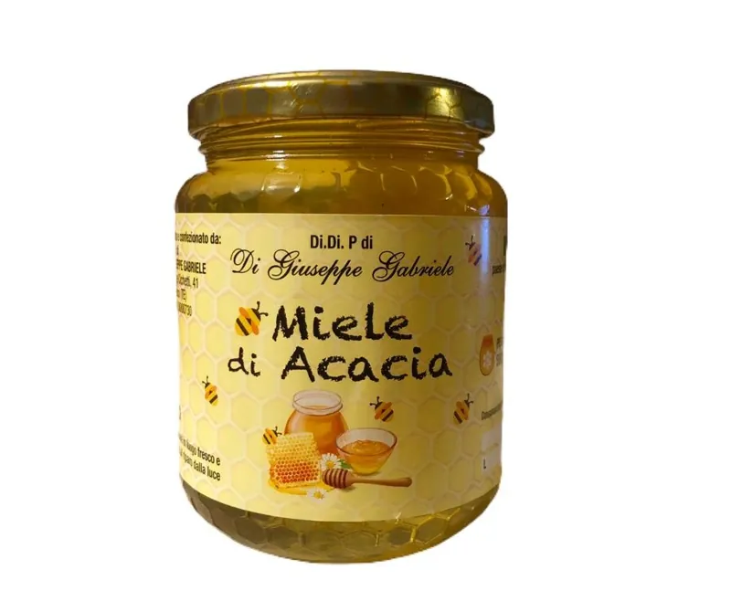
Miele di Acacia
- Fioritura
- maggio
- Colore
- chiarissimo, quasi trasparente
- Gusto
- delicato e dolce
- Stato
- resta liquido a lungo
formati: 250 g · 500 g · 1 kg
Azienda apistica · Notaresco (TE)
Gabriele Di Giuseppe, apicoltore a Notaresco. Miele di acacia, millefiori e girasole dalle nostre arnie, invasettato da noi senza aggiunte.
tre mieli, le nostre api, tutto fatto a mano
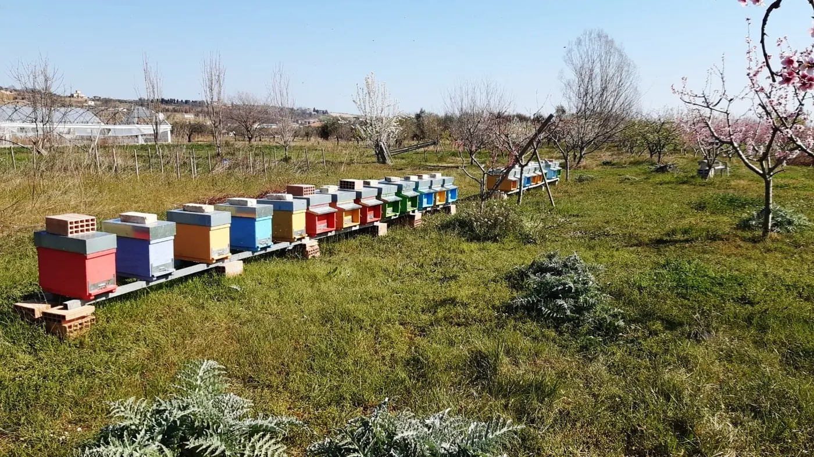
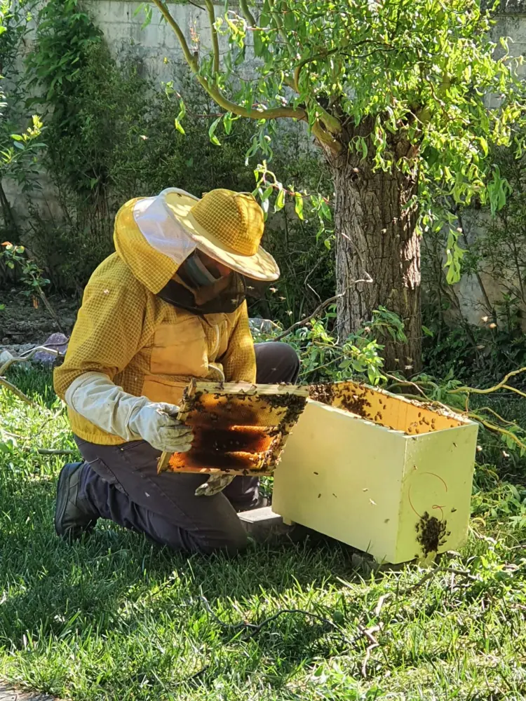
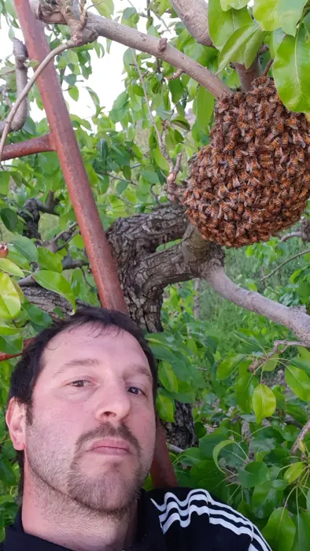
Chi siamo
"La mia passione per le api ed il miele nasce in famiglia: è stato mio padre ad insegnarmi a conoscere questi animali ed a scoprire il loro mondo."Gabriele Di Giuseppe, apicoltore
Una singola ape ha dietro di sé una moltitudine di sue simili, e ognuna ha il suo compito. Ogni giorno ognuna torna "a casa" dopo aver lavorato, proprio come noi, proprio come in una famiglia.
Mi ricordo quando per la prima volta ho visto un alveare e la paura che ho provato! Ma nello stesso momento ho osservato la naturalezza con cui mio padre si avvicinava e la cura che aveva in ogni gesto, e ho pensato che avrei voluto anch'io sperimentare quella padronanza, mista a profondo rispetto verso un'opera così grande realizzata da creature così piccole.
Così tutto è iniziato: dal timore alla scoperta, dall'osservazione alla messa in pratica, dall'ammirazione alla riconoscenza e alla passione.
Oggi l'azienda apistica Di. Di. P ha sede a Notaresco, in provincia di Teramo. Seguo personalmente ogni fase, dalla cura delle famiglie alla smielatura e al confezionamento.
Gabriele
Il nostro lavoro
Dalle arnie al vasetto.
Prodotti
Tre mieli, tre fioriture diverse. Ognuno ha il suo colore, il suo profumo e il suo modo di cristallizzare. Smieliamo solo il miele opercolato, cioè maturo, e lo invasettiamo noi, senza aggiunte.

formati: 250 g · 500 g · 1 kg
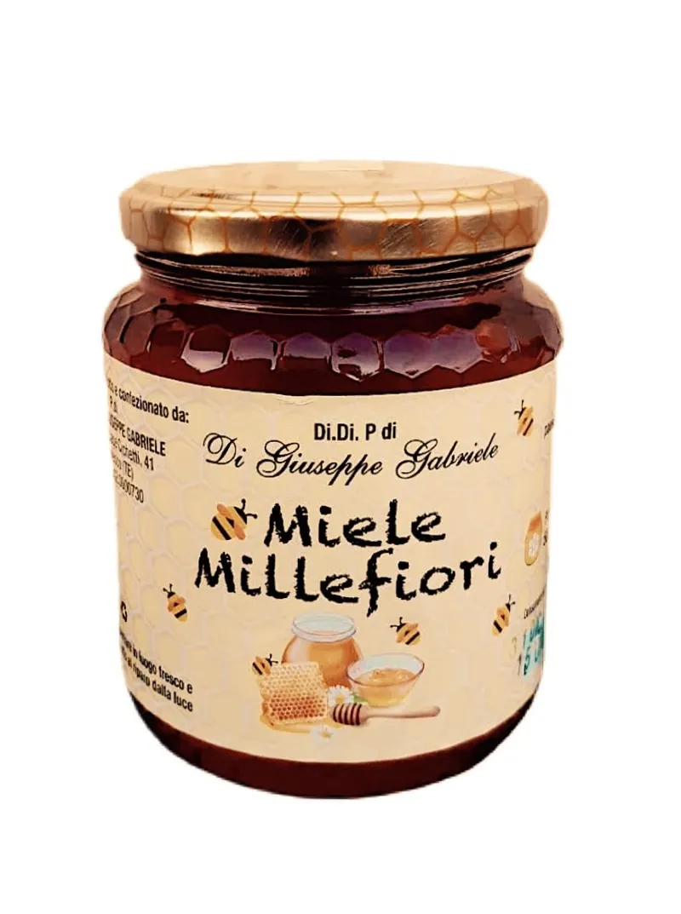
formati: 250 g · 500 g · 1 kg
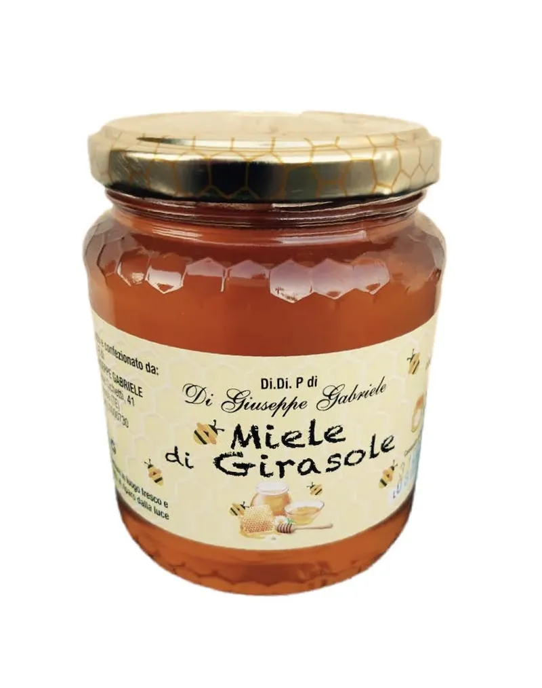
formati: 250 g · 500 g · 1 kg
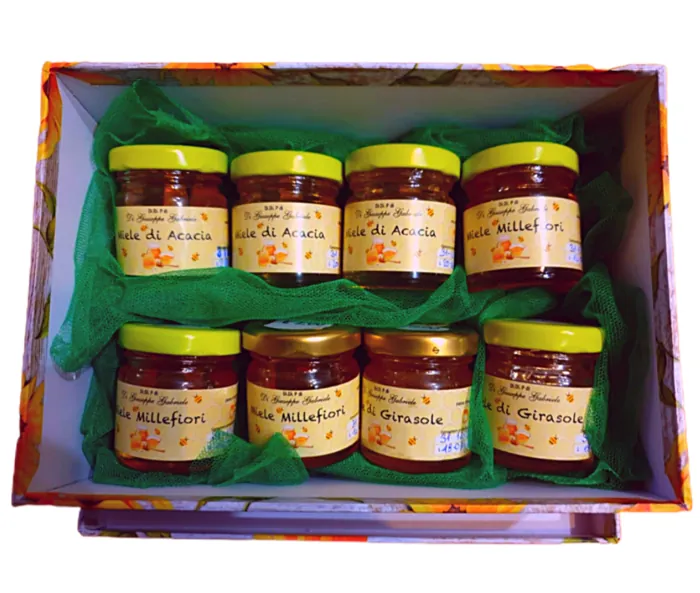
Vasetti da 40 g, ideali da assaggiare o da regalare.
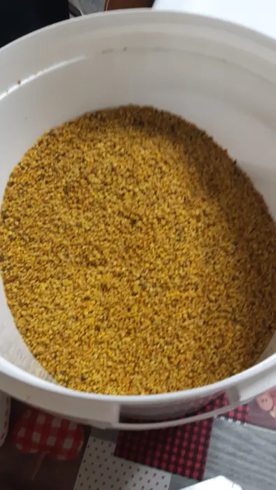
Raccolto dalle nostre api, in granuli.
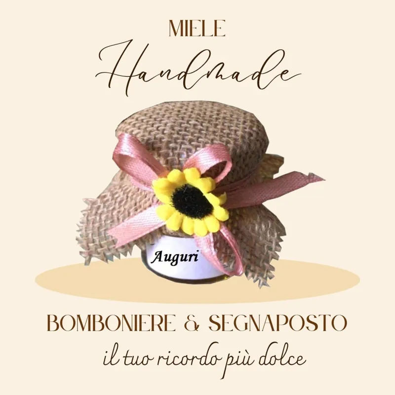
Fatti a mano e personalizzati: chiama e personalizza il tuo ricordo più dolce.
La nostra apicoltura
Un'apicoltura artigianale: arnie seguite una per una, il rispetto delle api prima di tutto e un miele che arriva in vasetto così come lo fanno loro.
Ogni ape ha il suo compito e ogni colonia va seguita da vicino: controlliamo la regina, la covata e le scorte, soprattutto prima dell'inverno.
L'acacia a maggio, il millefiori di primavera, il girasole in estate. Ogni miele nasce da una fioritura precisa e dal lavoro delle api in quel momento.
Smieliamo solo il miele opercolato, cioè maturo e già sigillato dalle api nelle cellette del favo. Poi lo invasettiamo noi, senza aggiunte.
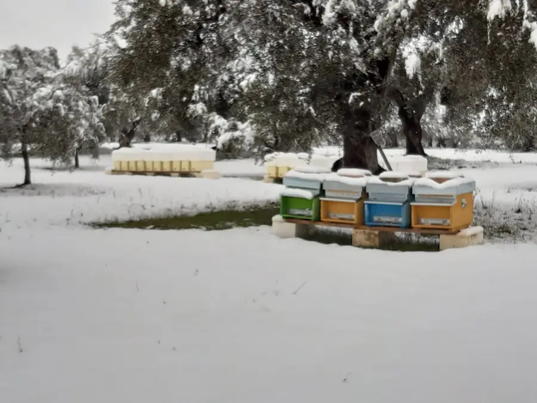
il nespolo
Il lavoro dell’apicoltore in inverno si concentra sulla manutenzione delle arnie e degli apiari. Si fanno lavori di falegnameria, si ripuliscono gli strumenti da lavoro, si revisionano le arnie vuote giacenti in magazzino, ci si comincia a procurare fogli cerei, telaini, filo, per armare i telaini e ad applicare i fogli cerei sia per il melario che per il nido. Nelle regioni più calde si può cominciare a nutrire le famiglie con la soluzione zuccherina.
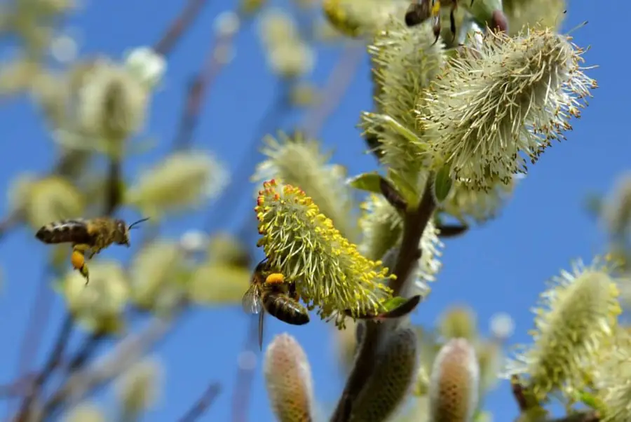
il mandorlo, il rosmarino, l’erica, il tarassaco, la rapa, i cavoli e la colza
Aumentano le giornate di sole, durante le quali le api volano in cerca di polline e di acqua per la prima covata che all’interno dell’alveare comincia a svilupparsi. Nei pressi dell’apiario si colloca un abbeveratoio nutriente. Questo perché le api non si allontanino troppo dall’apiario in cerca di sostanze minerali, rischiando così di non rientrare a causa del freddo. Se alla fine del mese sono presenti fioriture (come l’erica) è utile portare le arnie a bottinarle per fortificare le famiglie.
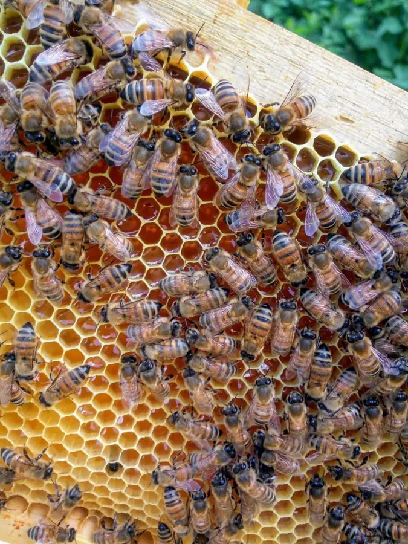
il rosmarino, la rapa, la colza, la rucola, il mandorlo
Nonostante il tempo ballerino, marzo è il mese in cui riprendono “ufficialmente” i lavori in apiario. È infatti adesso che le visite si fanno più frequenti e che si iniziano a prendere quegli accorgimenti necessari per affrontare nel modo migliore l’inizio delle fioriture. Ovviamente si raccoglie quello che si è seminato: se si è eseguito un corretto invernamento si avranno quasi sicuramente famiglie che hanno svernato bene, pronte a ripartire con la raccolta e senza grossi problemi. Le api cominciano l’attività frenetica. L’apicoltore visita le colonie con maggior frequenza per controllare la regina e la presenza di covata. Se in questo mese è tornato il freddo si regola la porticina d’ingresso per proteggere la covata dagli spifferi.
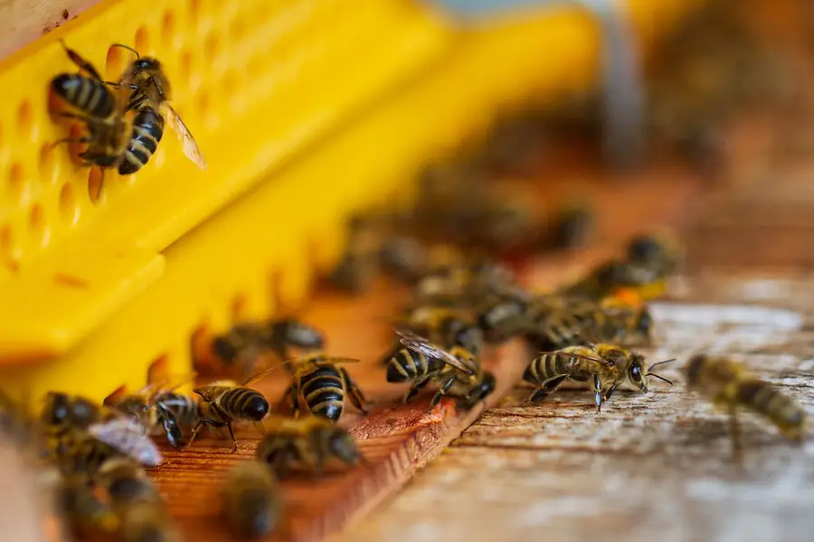
l’albicocco, il pesco, il susino, il ciliegio, il melo, il pero, il salice, la borragine, il cisto, l’erica, la rapa, la colza, la rucola
Finalmente è arrivata la primavera! Sperando non ritorni il freddo, si deve cercare di mantenere le famiglie al caldo fino al nuovo innalzamento delle temperature. Il mese di aprile è un mese fondamentale per lo sviluppo. I ritmi aumentano sia all’interno dell’arnia che per l’apicoltore che andrà ad aumentare le attività di controllo ed i lavori in apiario. Si possono iniziare a togliere le eventuali protezioni invernali ed a dare spazio alla famiglia in fase di sviluppo. Si possono aggiungere telaini costruiti rimandando l’aggiunta di fogli cerei alla seconda metà del mese, quando nasceranno le api della nuova covata. Bisogna conoscere lo stato della famiglia e valutare la necessità dell’eventuale nutrizione di supporto. In questo periodo, se predomina il bel tempo, la natura fa il resto. Le fioriture sono molte ed il nettare si trova in abbondanza nei fiori di campo e nelle copiose fioriture degli alberi da frutto. Il rischio di sciamatura è ancora minimo, tuttavia il bravo apicoltore, conoscendo il proprio apiario e sapendo valutare l’equilibrio della famiglia, sa quali sono le famiglie con forte propensione alla sciamatura e deve controllarne attentamente lo sviluppo. Si deve inoltre iniziare a ripulire la zona dell’apiario per evitare infestazioni di erba o rovi che andranno successivamente a ricoprire le arnie.
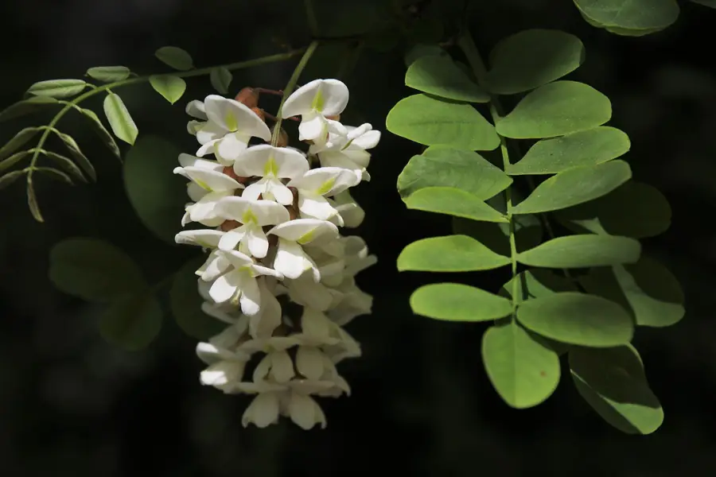
l’acacia, la tamerice, il pitosporo, il cisto, il tarassaco, la lupinella, il timo, la facelia
Nel mese di maggio c’è una delle fioriture più importanti ossia quella dell’acacia. Oltre alle condizioni di bel tempo per avere una fioritura importante e ricca di nettare è necessario che il fiore maturi. Tale maturazione avviene in condizioni ideali con temperature medie intorno ai 10 °C. È il periodo ideale per la sostituzione di eventuali telaini da nido deteriorati, smielare l’acacia per poi continuare con il grande raccolto, aggiungere i melari, controllare gli sciami ed eventualmente sostituire le regine più anziane.
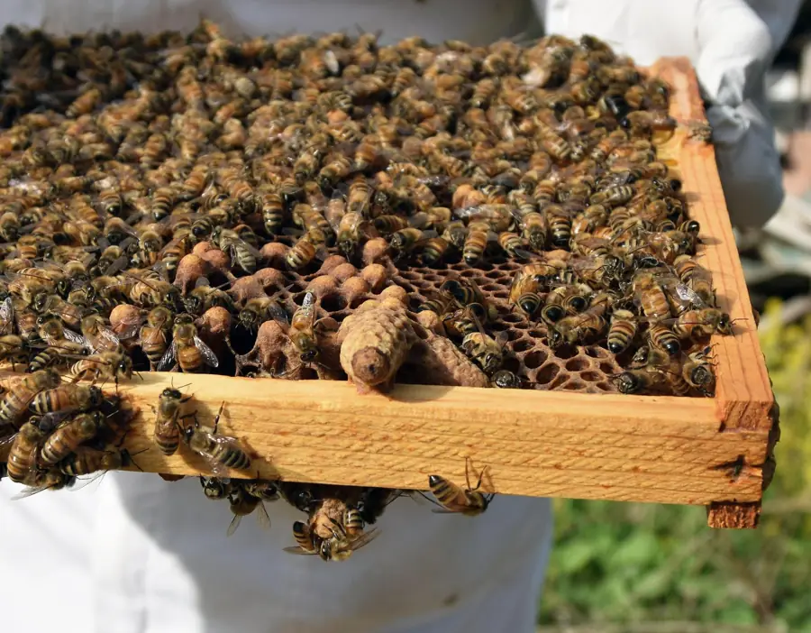
l’eucalipto, l’acacia, il castagno, il timo, i trifogli, la veccia, la lupinella, la galega, il rovo, la salvia, la lavanda, l’ippocastano, la facelia
Continua la bottinatura in pianura e in collina. Si sorvegliano i melari, e se ne aggiungono dove serve. Si smiela tutto il miele opercolato: il millefiori di primavera è il migliore! Ci si può preparare a raccogliere il castagno.
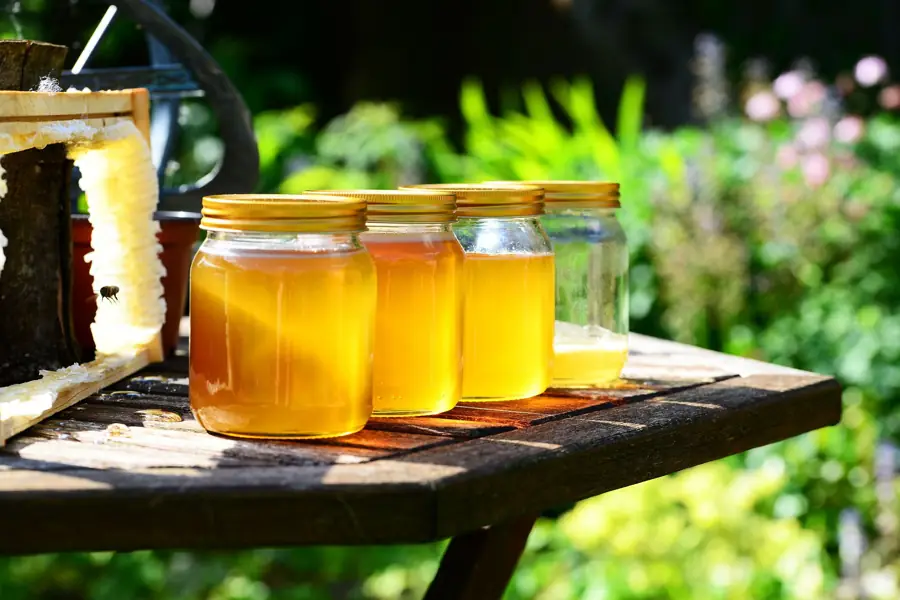
il meliloto, la medica, la veccia, i trifogli, il castagno, il tiglio, il rovo, la lavanda, il girasole, la galega, la facelia
Il caldo estivo mette alla prova le famiglie di api, che hanno bisogno di molta acqua per regolare la temperatura del nido. L’apicoltore fa attenzione a posizionare i propri alveari in zone ombreggiate e a mettere a disposizione delle api un abbeveratoio nelle vicinanze, onde evitare spiacevoli incidenti con i vicini che potrebbero allarmarsi della presenza di api nei sottovasi o nelle piscine. In alcune zone sono in corso gli ultimi raccolti di castagno, eucalipto, millefiori e melata, ma è ancora lontana la possibilità di concedersi un po’ di riposo: è questo, infatti, il momento in cui si pongono le basi per il lavoro dell’anno successivo, tenendo a bada i nemici dell’alveare, accompagnando la crescita delle nuove colonie, verificando il buon vigore delle regine e andando a sostituire quelle più vecchie o esaurite.
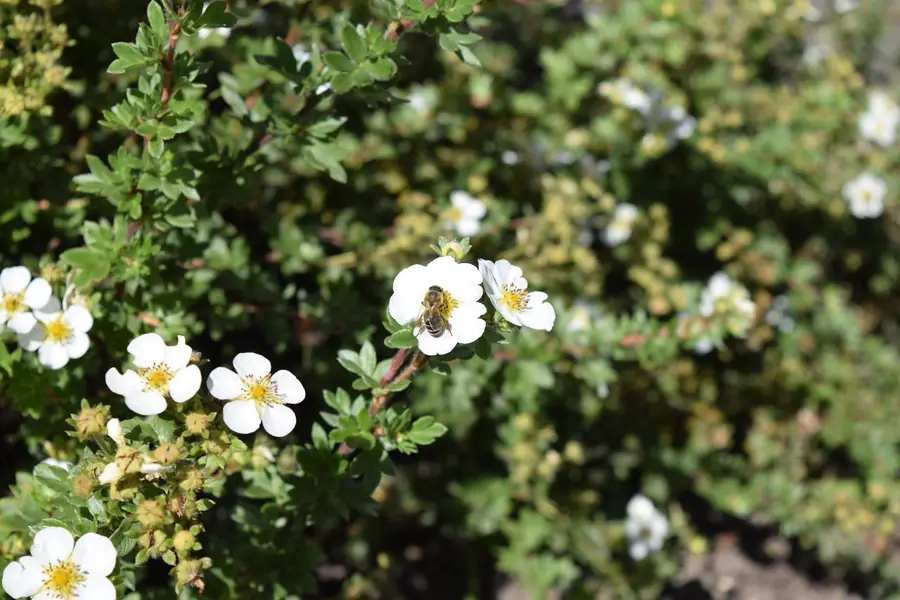
il brugo, il girasole, il lamio, il ginestrino, la medica, il meliloto, il mirto, la santoreggia
In questo periodo l’apicoltore può iniziare a lavorare per preparare le famiglie ad un buon invernamento, è consigliabile verificare accuratamente il nido, iniziando a controllare la consistenza delle scorte, della covata e la salute della colonia in generale, intervenendo se necessario sulle famiglie più deboli.
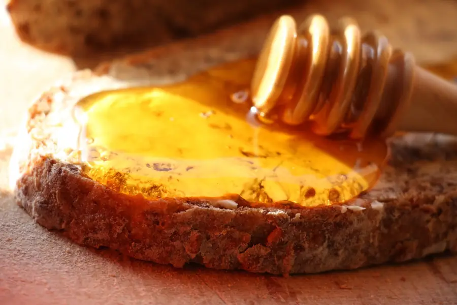
il brugo, l’edera, l’inula, il lamio, il girasole, la medica, il trifoglio bianco e violetto
L’approssimarsi dell’autunno nelle zone più fresche costringe le famiglie a prepararsi all’inverno, riducendo le covate e immagazzinando le scorte il più vicino possibile al nido. Vengono tolti i melari e, una volta estratto l’ultimo miele, immagazzinati per la stagione successiva. Nelle zone più calde, invece, le fioriture autunnali danno un’ulteriore spinta alla crescita degli alveari dopo il rallentamento estivo, con possibili raccolti di miele su eucalipto ed edera.
il brugo, l’edera, il rosmarino e alcune crucifere
Il mese di ottobre è al pari dei mesi primaverili un mese molto importante per l'apicoltore ed è il periodo in cui si concentrano i lavori per portare avanti un buon invernamento. Le attività ed i controlli da portare avanti sono molti. Le giornate sono ormai brevi e nelle poche ore di luce le colonie si apprestano a raccogliere l'ultimo eventuale nettare e polline a disposizione per nutrire l'ultima covata pre-invernale, che andrà a formare la colonia di api per l'inverno. Il lavoro necessario per un buon invernamento deve essere fatto scrupolosamente fin dalle prime visite di ottobre, correndo ai ripari in caso di problemi. L'apicoltore deve verificare la presenza della regina, la consistenza e la forza della famiglia. Si controllano attentamente le scorte procedendo ove necessario ad una nutrizione di supporto appropriata che dovrà anche aiutare le api a superare l'inverno.
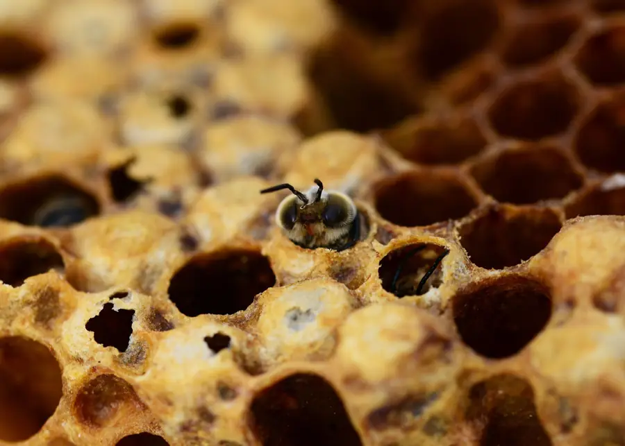
il brugo, il corbezzolo, il rosmarino e la facelia di seconda semina
Le giornate si accorciano e le regine, quasi ovunque, interrompono la deposizione. Il fermento dei mesi più caldi è sostituito dallo sforzo di mantenersi al caldo: le api si stringono le une alle altre per produrre il calore necessario alla loro sopravvivenza consumando il miele immagazzinato e facendo vibrare i muscoli del torace. Famiglie ben popolate e con scorte sufficienti non temono i rigori dell’inverno, ma se anche una sola delle due condizioni venisse a mancare potrebbero essere guai seri! L’apicoltore passa in rassegna gli apiari per controllare che siano in ordine e sufficientemente al riparo dalle intemperie: ad esempio in posti particolarmente ventosi vengono messi dei pesi sui tetti delle arnie per scongiurarne lo scoperchiamento.
il corbezzolo
Il mese di dicembre è l'ultimo dell'anno e il primo dell'inverno, quando le nostre colonie inizieranno a sentire i primi freddi che si protrarranno anche nel mese di gennaio. In questo mese, le attività in apiario sono ridotte al minimo. Le nostre colonie se ben invernate sono al caldo nel glomere ed è bene non provocare rumori nelle vicinanze dell'arnia o arrecare disturbi. Non potendo svolgere attività in apiario, il buon apicoltore approfitta del tempo a disposizione per sistemare le arnie e i melari in magazzino, pulirli e verniciarli con prodotti appositi, preparare i telaini per il prossimo anno e anche per aggiornarsi, leggendo libri e riviste di settore, approfondendo argomenti o tecniche di interesse e confrontandosi con altri apicoltori. Dopodiché si concede finalmente il meritato riposo dalle fatiche fisiche, ma con la mente già tesa a programmare la nuova annata, con l’incrollabile ottimismo che questa passione suscita.
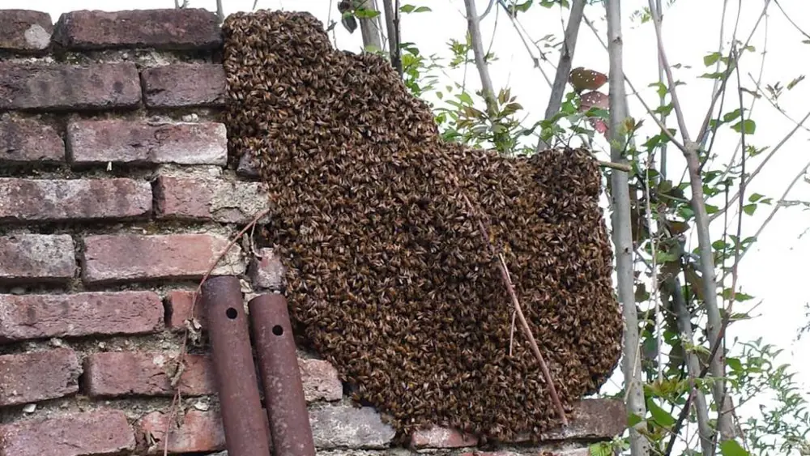
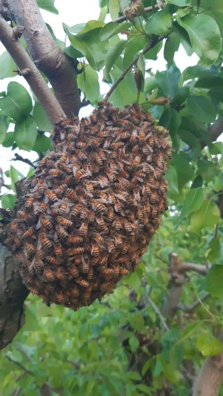
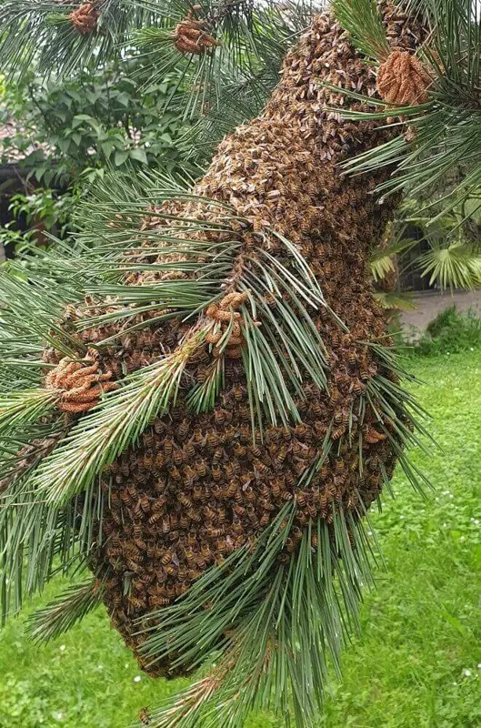
Uno sciame si è posato in giardino, su un albero o su un muro? Interveniamo per recuperarlo senza fare del male alle api e dargli una nuova casa. Massima disponibilità.
Matrimoni, battesimi, comunioni: prepariamo a mano bomboniere e segnaposto al miele, personalizzati. Chiama e personalizza il tuo ricordo più dolce.
Foto e video
I video sono su YouTube e si caricano solo quando premi play.
Ricette
Da sempre il miele è una valida alternativa allo zucchero: la sua composizione di glucosio e fruttosio lo rende, dal punto di vista culinario, insostituibile.
Il suo impiego è versatile: inumidisce al meglio dolci e torte, grazie alla presenza elevata di fruttosio, e ne garantisce una più lunga conservazione. Utilizzato a crudo, invece, regala tutto il suo aroma e la sua essenza, soprattutto in abbinamento a determinati alimenti come i formaggi.
ecco alcune ricette da provare...
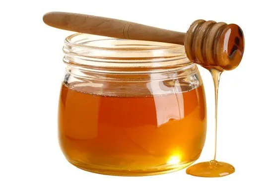
Una versione light della tradizionale torta di formaggio americana, dove lo yogurt bianco alla greca e il miele sostituiscono panna e zucchero. Da servire da sola, con frutta fresca o con salse alla frutta o al cioccolato.
Dolce onnipresente sulle tavole dei napoletani a Natale ma anche a Carnevale: palline di pasta fritta affogate nel miele e ricoperte di confettini colorati, i diavulilli.
il miele più adatto? il millefioriUna delle ricette più semplici ma anche delle più golose: vi basterà poco per dare vita a una colazione veloce, sfiziosa e originale.
Il binomio perfetto per una colazione nutriente e golosa.
Ravioli fatti in casa farciti con gustoso pecorino sardo, accompagnati da una coppetta di miele dolce.
Se hai una ricetta con il nostro miele, raccontacela: la aggiungiamo al sito.
scrivici su WhatsAppRiconoscimenti
"L'eccellenza è il giusto riconoscimento a chi fiducioso opera nel proprio settore con abnegazione ed entusiasmo, superando quotidianamente gli ostacoli e guardando al futuro con ottimismo."
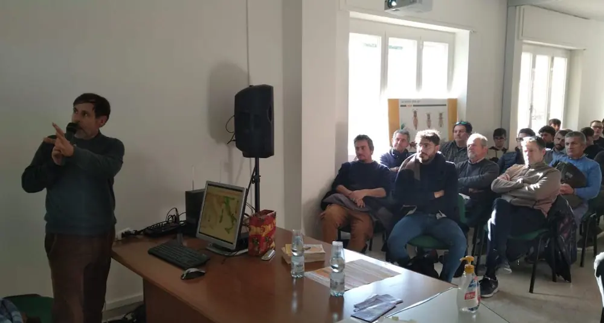
Due medaglie d'oro: una per il miele di acacia e una per il miele uniflorale, consegnate all'Istituto Agrario Di Poppa-Rozzi davanti a studenti e apicoltori.
Recensioni
"Ottimo miele. Alta qualità! Persona seria e disponibile. Consigliatissimo."
"Miele di ottima qualità. Titolare molto gentile e disponibile."
"Consigliatissimo. Miele buonissimo!"
"Oro colato!"
Hai assaggiato i nostri prodotti? Una recensione aiuta chi cerca miele genuino a fidarsi. Grazie.
Contatti
Per ordini, assaggi, bomboniere o per uno sciame da recuperare. Il modo più veloce è WhatsApp.